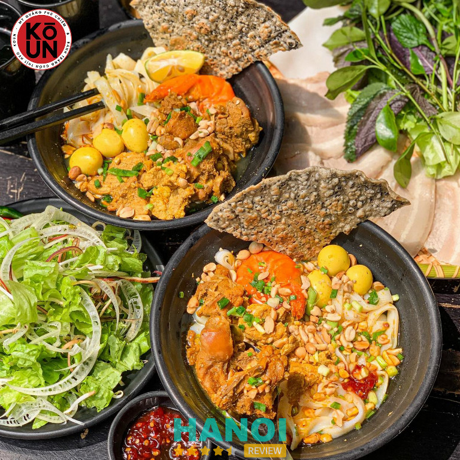
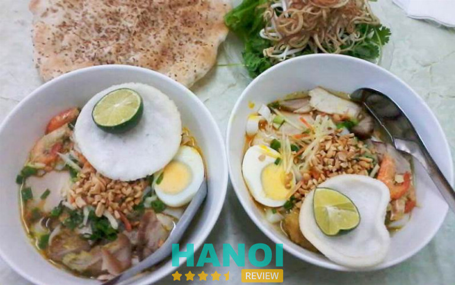
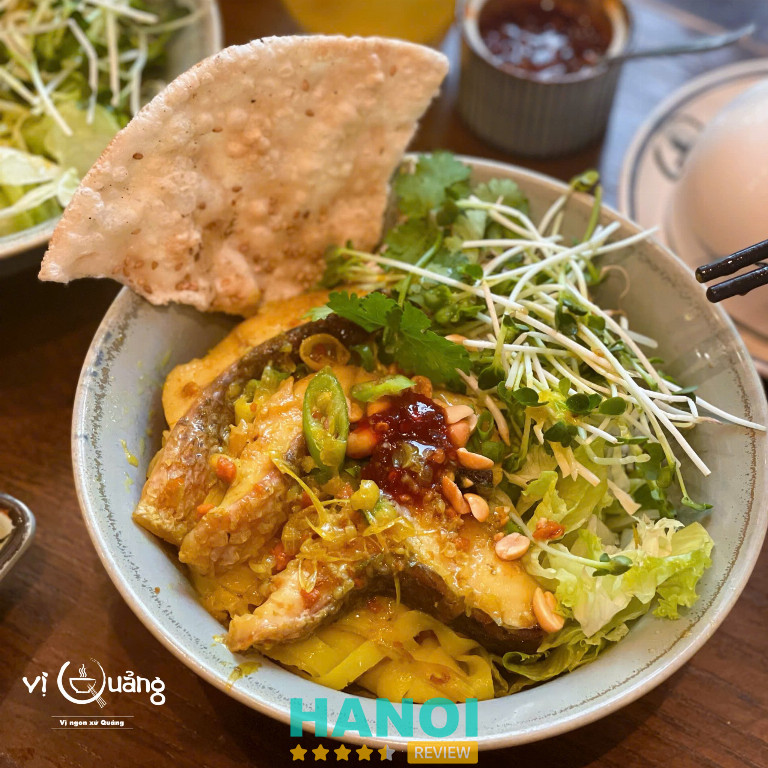
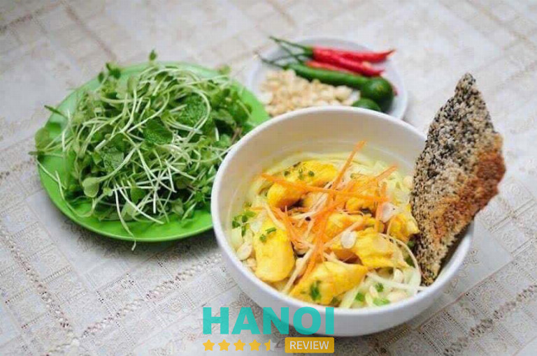
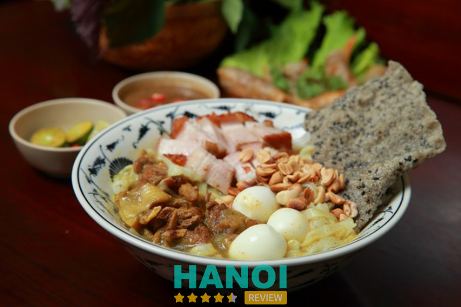
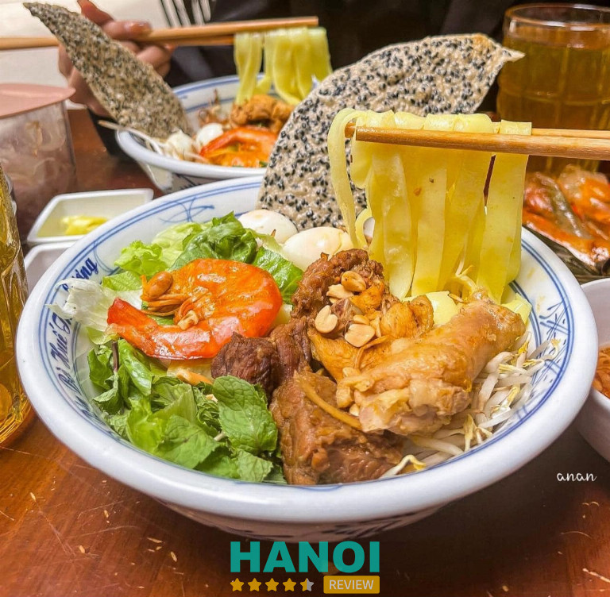
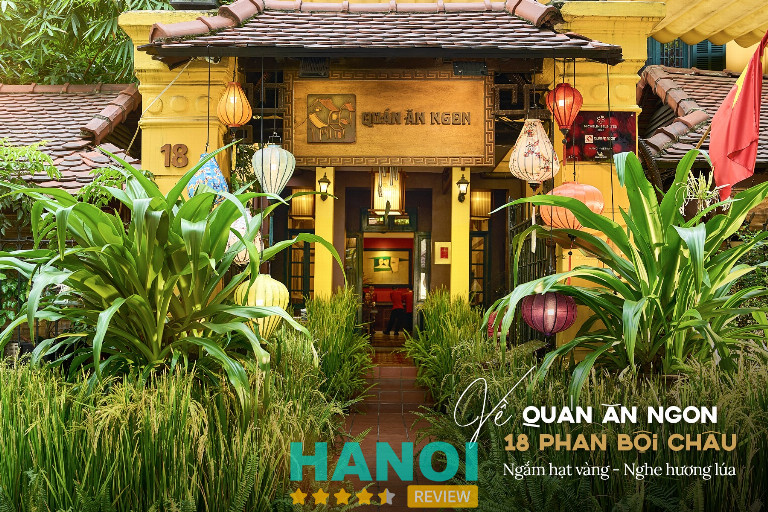
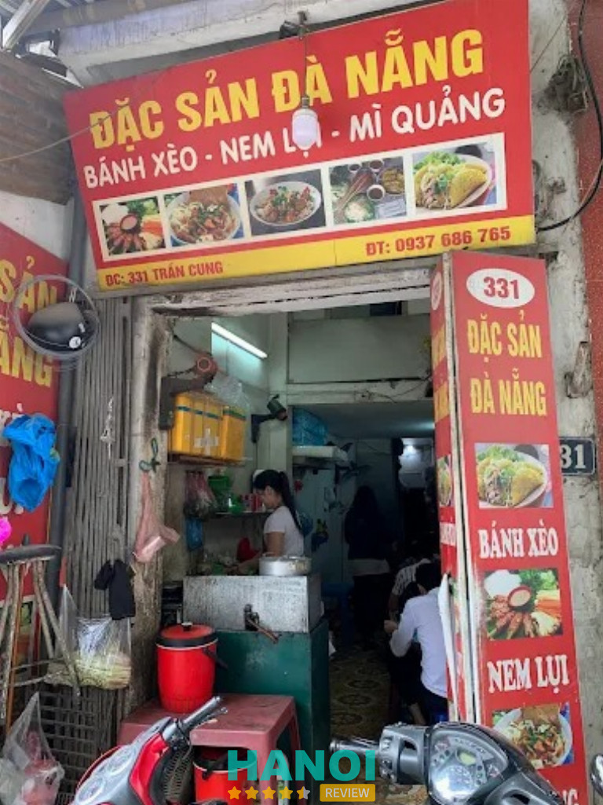
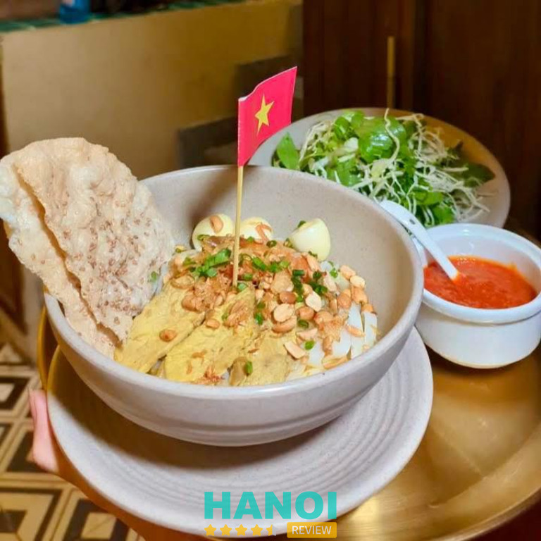
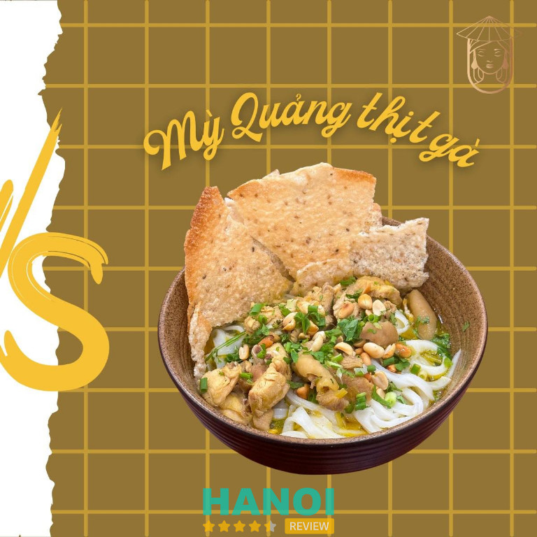

11 Quán mì quảng ở Hà Nội ngon, chất lượng và phục vụ tận tâm
Mì Quảng là món ăn miền Trung nổi tiếng, và hiện nay nhiều quán mì quảng ở Hà Nội mang đến hương vị đậm đà, chuẩn vị. Thực khách có thể thưởng thức mì dai, nước dùng thơm ngon cùng thịt, tôm tươi, đảm bảo chất lượng. Không gian quán sạch sẽ, phục vụ tận tâm giúp trải nghiệm ẩm thực thêm trọn vẹn, phù hợp cả cho gia đình và bạn bè.
Top 11 quán mì quảng tại Hà Nội được khách đánh giá cao
Các quán mì quảng ở Hà Nội nổi bật nhờ hương vị đặc trưng, nguyên liệu tươi ngon và phục vụ tận tâm. Khách hàng luôn hài lòng khi thưởng thức món ăn tròn vị, hấp dẫn.
Tiệm Ăn Koun – Cầu Giấy
Tiệm Ăn Koun là một trong những quán mì Quảng Hà Nội nổi bật, được nhiều thực khách tìm đến để thưởng thức hương vị đậm đà, chuẩn vị miền Trung. Nằm trên con phố Nghĩa Tân sầm uất, quán mang đến không gian ấm cúng, thân thiện, với décor mộc mạc, gần gũi, khiến khách hàng cảm thấy thoải mái ngay từ lần đầu ghé thăm.
Được biết đến với sự niềm nở, tận tâm của chủ quán, Tiệm Ăn Koun không chỉ nổi bật nhờ chất lượng món ăn mà còn bởi phong cách phục vụ chu đáo, tạo niềm tin lâu dài cho khách hàng. Đây là địa điểm lý tưởng nếu bạn đang tìm quán mì Quảng Hà Nội ngon, chất lượng.

Điểm nhấn của Tiệm Ăn Koun chính là món mì Quảng đặc trưng. Sợi mì dai, mềm, quyện cùng nước lèo ninh từ xương hầm nhiều giờ, tạo nên vị ngọt tự nhiên, đậm đà khó quên. Mỗi tô mì được trình bày đầy đặn, hấp dẫn với đa dạng topping:
- Thịt gà ta thơm mềm
- Tôm tươi ngọt tự nhiên
- Ếch đồng béo ngậy
- Thập cẩm rau sống thanh mát
- Trứng cút bùi bùi
- Bánh tráng mè giòn rụm
- Ớt cay vừa phải tăng hương vị
Ngoài mì Quảng, quán còn phục vụ một số món đặc sản miền Trung khác, đáp ứng nhu cầu đa dạng của thực khách. Giá cả hợp lý, phù hợp với nhiều đối tượng khách hàng, từ học sinh, sinh viên đến dân văn phòng.
Tại Sao Nên Chọn Tiệm Ăn Koun:
- Không gian ấm cúng, gần gũi
- Chủ quán thân thiện, phục vụ tận tâm
- Nguyên liệu tươi ngon, đảm bảo chất lượng
- Món ăn chuẩn vị miền Trung, hương thơm quyến rũ
Với uy tín lâu năm và chất lượng được nhiều người công nhận, Tiệm Ăn Koun là lựa chọn lý tưởng cho những ai muốn thưởng thức mì Quảng Hà Nội chuẩn vị. Hãy ghé thăm để trải nghiệm hương vị tuyệt vời và dịch vụ thân thiện tại đây.
Thông tin liên hệ:
- Địa chỉ: 25A20 Nghĩa Tân, Cầu Giấy, Hà Nội
- Điện thoại: 0971 966 913
- Facebook: fb.com/tiemankoun
Mì Quảng Bà Vị – Hai Bà Trưng
Mì Quảng Bà Vị là một trong những quán mì quảng ở Hà Nội được nhiều thực khách yêu thích nhờ hương vị miền Trung chuẩn, nguyên liệu tươi ngon và phục vụ tận tâm. Quán nằm ngay trung tâm, không gian rộng rãi, sạch sẽ, thích hợp để thưởng thức bữa ăn cùng gia đình hoặc bạn bè. Giá cả hợp lý, bát mì đầy đặn và nước trộn đậm đà, tạo trải nghiệm ẩm thực trọn vẹn cho mọi khách hàng.

Điểm nổi bật của quán mì quảng ở Hà Nội:
Quán mì quảng ở Hà Nội này thu hút khách nhờ chất lượng nguyên liệu và hương vị riêng:
- Nguyên liệu tươi ngon: Sợi mì dai, bánh đa giòn, thịt và tôm được nhập mới hàng ngày từ Đà Nẵng.
- Hương vị đậm đà: Nước trộn béo, vừa miệng, phù hợp khẩu vị người miền Bắc.
- Trang trí đẹp mắt: Mỗi bát mì đều có rau thơm tươi, lạc rang giòn tan và bánh đa.
- Giá cả hợp lý: Bát mì đầy đặn mà mức giá rất phải chăng, phù hợp với mọi đối tượng.
- Không gian sạch sẽ: Quán rộng rãi, bàn ghế gọn gàng, tạo cảm giác thoải mái khi thưởng thức.
- Dịch vụ tận tâm: Nhân viên thân thiện, phục vụ nhanh chóng, khách đến ăn còn được tặng bánh đa và trà sâm dứa.
- Uy tín lâu năm: Quán được nhiều thực khách địa phương và du khách đánh giá cao.
Quán mì quảng ở Hà Nội như Mì Quảng Bà Vị là địa chỉ lý tưởng để trải nghiệm ẩm thực miền Trung ngay giữa thủ đô. Nguyên liệu tươi ngon, hương vị đậm đà, giá hợp lý và phục vụ tận tâm chắc chắn sẽ khiến bạn hài lòng và muốn quay lại nhiều lần.
Thông tin liên hệ:
- Địa chỉ: 91 Võ Thị Sáu, Thanh Nhàn, Hai Bà Trưng, Hà Nội
- Điện thoại: 0943 576 668
- Email: myquangbavihanoi@gmail.com
- Facebook: fb.com/MyQuangBaViHaNoi
Quán Mì Quảng Vị Quảng – Hoàn Kiếm
Quán Mì Quảng Vị Quảng là một trong những địa chỉ mì Quảng ngon Hà Nội mà bạn không nên bỏ lỡ. Nằm ngay trung tâm quận Hoàn Kiếm, quán gây ấn tượng với không gian rộng rãi, bài trí đơn giản nhưng ấm cúng, mang đến trải nghiệm thưởng thức thoải mái cho mọi thực khách.
Với kinh nghiệm phục vụ lâu năm, Vị Quảng nổi bật nhờ hương vị mì Quảng chuẩn xứ Quảng, phục vụ các món đặc sản từ Quảng Nam, đặc biệt là mì Quảng với topping đa dạng.

Quán có không gian sạch sẽ, thoáng mát, thích hợp cho cả gia đình và nhóm bạn. Sợi mì Quảng ở đây mềm, dai vừa phải, kết hợp với nước dùng ngọt tự nhiên được nấu từ xương, tạo nên hương vị đậm đà, chuẩn vị miền Trung. Điểm nhấn của món ăn là phần topping phong phú gồm thịt heo, thịt bò, thịt gà, tôm tươi và rau thơm tươi ngon, ăn kèm bánh tráng giòn rụm tạo nên trải nghiệm ẩm thực độc đáo.
Các món đặc sắc tại Vị Quảng:
- Mì Quảng thịt heo, bò, gà
- Mì Quảng tôm tươi, mực
- Các món ăn kèm: bánh tráng, rau thơm, đậu phộng
- Đặc sản Quảng Nam khác theo mùa
Quán Mì Quảng Vị Quảng không chỉ nổi tiếng nhờ món ăn chất lượng mà còn được đánh giá cao về dịch vụ, nhân viên nhiệt tình, thân thiện. Giá cả hợp lý, phù hợp với mọi đối tượng khách hàng.
Với uy tín lâu năm và chất lượng món ăn được đảm bảo, Vị Quảng là lựa chọn hoàn hảo cho những ai muốn thưởng thức mì Quảng ngon chuẩn vị ngay tại Hà Nội. Hãy đến trải nghiệm để cảm nhận hương vị miền Trung ngay giữa thủ đô.
Thông tin liên hệ:
- Địa chỉ: 35 Trần Hưng Đạo, Hoàn Kiếm, Hà Nội
- Điện thoại: 0933 566 669
- Email: marketing@viquang.vn
- Facebook: fb.com/ViQuangNgon
Đà Nẵng Quán – Cầu Giấy
Đà Nẵng Quán là một trong những quán mì Quảng Hà Nội nổi bật mà bạn không nên bỏ lỡ. Nằm ngay tại trung tâm quận Cầu Giấy, quán thu hút thực khách nhờ hương vị đặc trưng miền Trung và chất lượng món ăn được đảm bảo. Với kinh nghiệm lâu năm trong ẩm thực, Đà Nẵng Quán mang đến cho khách hàng trải nghiệm mì Quảng cá lóc thơm ngon, nước dùng đậm đà và nguyên liệu tươi sạch, thể hiện sự tận tâm và đam mê của đội ngũ đầu bếp.

Không gian quán ấm cúng, rộng rãi, thích hợp cho cả những buổi gặp gỡ bạn bè lẫn gia đình. Phục vụ tận tình, nhiệt tình, tạo cảm giác thoải mái và thư giãn cho khách hàng. Đây là điểm cộng lớn giúp Đà Nẵng Quán không chỉ là nơi thưởng thức mì Quảng Hà Nội mà còn là địa điểm lý tưởng để trò chuyện và thưởng thức ẩm thực trọn vẹn.
Điểm nổi bật của quán:
- Nguyên liệu tươi ngon, cá lóc chọn kỹ, đảm bảo chất lượng món ăn.
- Giá cả hợp lý, phù hợp với nhu cầu đa dạng của khách hàng.
- Phòng lạnh mát mẻ, bảo quản thực phẩm tốt và an toàn vệ sinh.
- Đội ngũ nhân viên nhiệt tình, giàu kinh nghiệm trong phục vụ khách hàng.
Thực đơn nổi bật:
- Mì Quảng cá lóc truyền thống
- Mì Quảng tôm thịt
- Mì Quảng gà
- Các món ăn kèm như bánh tráng, rau sống, chả lụa
Đà Nẵng Quán cam kết mang đến trải nghiệm ẩm thực miền Trung đúng vị ngay tại Hà Nội. Nếu bạn đang tìm một địa chỉ mì Quảng Hà Nội thơm ngon, uy tín và giá hợp lý, đây chắc chắn là lựa chọn hoàn hảo.
Thông tin liên hệ:
- Địa chỉ: 79 Trung Hòa, Cầu Giấy, Hà Nội
- Điện thoại: 0326 806 924
- Facebook: fb.com/banh.trang.cuon.thit.heo
Madame Hin – Hoàn Kiếm
Nếu bạn đang tìm kiếm một quán mì Quảng uy tín ở Hà Nội, Madame Hin là địa chỉ không thể bỏ qua. Nằm ngay tại trung tâm quận Hoàn Kiếm, quán đã trở thành điểm đến quen thuộc của người dân Khuất Duy Tiến, Thanh Xuân trong suốt hơn 20 năm.
Madame Hin nổi bật với các món đặc sản Hội An như cao lầu và mì Quảng, mang đến hương vị đậm đà, ngọt ngào và chuẩn vị. Đây thực sự là một lựa chọn tuyệt vời cho những ai muốn trải nghiệm ẩm thực miền Trung ngay giữa lòng Hà Nội.

Một số món nổi bật tại Madame Hin:
- Mì Quảng Gà
- Mì Quảng Heo
- Mì Quảng Bò
- Mì Quảng Tim Heo
- Mì Quảng Lẫn Gà Heo
- Mì Quảng Lẫn Bò Gà
- Mì Quảng Lẫn Bò Heo
- Mì Quảng Lẫn Tôm Mực
- Mì Quảng Thập Cảm Đặc Biệt
Quán cung cấp nhiều loại nhân mì Quảng như thịt gà, thịt heo, thịt bò, thịt ếch, có thể kết hợp 2–3 loại thịt để tạo hương vị phong phú. Mỗi phần mì đi kèm trứng gà luộc, lạc rang, bánh tráng giòn tan và rau sống tươi mát như giá đỗ, hoa chuối bào, rau húng quế và rau xà lách. Giá cả hợp lý, từ 65,000 VNĐ đến 95,000 VNĐ, đảm bảo chất lượng xứng đáng.
Madame Hin không chỉ là nơi thưởng thức mì Quảng chuẩn vị Hội An mà còn là địa chỉ uy tín tại Hà Nội. Hãy đến và trải nghiệm, đảm bảo mỗi bát mì đều khiến bạn hài lòng và nhớ mãi hương vị.
Thông tin liên hệ:
- Địa chỉ: 91 Vọng Hà, Hoàn Kiếm, Hà Nội
- Số điện thoại: 0904 470 499
- Facebook: fb.com/Madamehin
Quán Hoàng Bèo – Cầu Giấy
Quán Hoàng Bèo là một trong những địa điểm nổi bật tại Hà Nội chuyên phục vụ các món đặc sản miền Trung, nổi bật là Mì Quảng ếch. Nằm ngay tại trung tâm quận Cầu Giấy, quán không chỉ thu hút thực khách nhờ vị ngon chuẩn miền Trung mà còn nhờ không gian thoáng mát, sạch sẽ, có điều hòa, thích hợp cho cả gia đình và nhóm bạn.
Với kinh nghiệm lâu năm trong việc chế biến mì Quảng và các món đặc sản, Hoàng Bèo luôn đảm bảo chất lượng nguyên liệu tươi ngon, chế biến an toàn, phù hợp khẩu vị người Hà Nội.
Mì Quảng ếch tại Hoàng Bèo được đánh giá là món ăn hot gần đây, được dân sành ăn săn lùng. Thịt ếch tươi nguyên con, được làm sạch, nêm nếm vừa miệng và chế biến mỗi ngày. Món ăn dân dã nhưng bổ dưỡng, thích hợp cho cả người lớn và trẻ em. Đặc biệt, quán sử dụng bếp tổng từ Huế và Đà Nẵng, đảm bảo hương vị chuẩn miền Trung.
Điểm nổi bật của quán Hoàng Bèo:
- Không gian quán thoáng mát, sạch sẽ, có điều hòa
- Nguyên liệu tươi mới, không chất bảo quản
- Sản phẩm đóng gói mang về luôn giữ độ tươi ngon
- Chương trình khuyến mãi, thẻ thành viên tích điểm, ưu đãi sinh nhật
Các món chính tại quán:
- Mì Quảng ếch
- Mì Quảng thịt gà, tôm, bò
- Các món đặc sản miền Trung khác
Quán Hoàng Bèo là lựa chọn lý tưởng cho những ai muốn thưởng thức Mì Quảng chuẩn vị giữa lòng Hà Nội. Với đội ngũ nhân viên chuyên nghiệp, dịch vụ chu đáo và nguyên liệu tươi ngon, quán cam kết mang đến trải nghiệm ẩm thực chất lượng. Hãy đến Hoàng Bèo để cảm nhận hương vị Mì Quảng ếch độc đáo và tận hưởng không gian ăn uống thân thiện, an toàn.
Thông tin liên hệ:
- Địa chỉ: 40 Duy Tân, Cầu Giấy, Hà Nội
- Điện thoại: 024 6687 0906
- Website: hoangbeo.com
Quán Thu Sương – Thanh Xuân
Quán Thu Sương là một điểm đến uy tín tại Hà Nội dành cho những ai yêu thích ẩm thực miền Trung, đặc biệt là mì Quảng và bún bò Huế. Nằm ngay tại Ngõ 5 Khuất Duy Tiến, quán nổi bật với không gian sạch sẽ, thoáng mát và đội ngũ phục vụ nhiệt tình, mang đến trải nghiệm ăn uống vừa ngon vừa thoải mái.
Quán Thu Sương không chỉ phục vụ món mì Quảng chuẩn vị Hội An mà còn đa dạng với các món bún, bánh bột lọc và thịt nướng, đáp ứng nhu cầu thưởng thức đa dạng của thực khách. Đây là lựa chọn lý tưởng cho những ai muốn tìm quán mì Quảng Hà Nội chất lượng, giá cả hợp lý.

Quán Thu Sương đặc biệt chú trọng vào cách chế biến riêng cho từng món. Nước lèo của mì Quảng được ninh từ thịt gà ta và các loại gia vị đặc trưng, giữ vị ngọt tự nhiên và đậm đà. Mỗi tô mì được phục vụ đầy đủ topping: thịt ba chỉ, trứng cút, bánh tráng và rau sống tươi ngon. Ngoài mì Quảng, bún bò Huế tại quán cũng hấp dẫn không kém, với nước dùng thơm, vị cay nồng vừa phải, đảm bảo hương vị chuẩn miền Trung.
Danh sách món chính tại Quán Thu Sương:
- Mì Quảng gà, mì Quảng thịt heo
- Bún bò Huế truyền thống
- Bún thịt nướng
- Bánh bột lọc
- Rau sống, gia vị đi kèm
Quán Thu Sương luôn duy trì chất lượng cao, phục vụ tận tâm và không gian thoải mái. Với mức giá tầm trung, phần ăn lớn và hương vị đậm đà, đây là lựa chọn hàng đầu cho những tín đồ mì Quảng và ẩm thực miền Trung tại Hà Nội.
Thông tin liên hệ:
- Địa chỉ: Ngõ 5 Khuất Duy Tiến, Thanh Xuân, Hà Nội
- Điện thoại: 0934 528 591
- Facebook: fb.com/100063685623310
Quán Ăn Ngon – Hoàn Kiếm
Quán Ăn Ngon là một trong những địa điểm thưởng thức mì Quảng nổi tiếng tại Hà Nội. Nằm ngay trung tâm thành phố, quán không chỉ thuận tiện cho việc di chuyển mà còn gây ấn tượng bởi không gian rộng rãi, sạch sẽ và thoáng mát.
Với nhiều năm phục vụ thực khách, Quán Ăn Ngon đã xây dựng được uy tín nhờ chất lượng món ăn ổn định, hương vị đậm đà chuẩn miền Trung và phong cách phục vụ tận tình. Đây là lựa chọn lý tưởng cho những ai muốn trải nghiệm mì Quảng ngon đúng điệu tại Hà Nội.

Quán Ăn Ngon chú trọng vào chất lượng từng bát mì Quảng. Sợi mì dai, nước dùng thơm ngon, kết hợp cùng các loại nhân đa dạng như thịt gà, thịt lợn, tôm, và rau tươi sạch, đảm bảo mang đến trải nghiệm ẩm thực trọn vẹn.
Không gian quán được bài trí tinh tế, tạo cảm giác ấm cúng và thư giãn cho khách hàng ngay từ lần đầu bước vào. Nhân viên phục vụ nhanh nhẹn, thân thiện, luôn sẵn sàng hỗ trợ và tư vấn thực khách lựa chọn món phù hợp.
Danh sách món tiêu biểu:
- Mì Quảng gà truyền thống
- Mì Quảng tôm thịt
- Mì Quảng ếch hấp dẫn
- Các món ăn kèm đa dạng: bánh tráng, rau sống, chả lụa
- Đồ uống và tráng miệng miền Trung
Quán Ăn Ngon không chỉ là nơi thưởng thức ẩm thực mà còn là điểm đến mang đến cảm giác thoải mái và hài lòng. Với uy tín nhiều năm, chất lượng món ăn luôn được đảm bảo, Quán Ăn Ngon xứng đáng là lựa chọn hàng đầu khi tìm quán mì Quảng Hà Nội.
Thông tin liên hệ:
- Địa chỉ: 18 Phan Bội Châu, Quận Hoàn Kiếm, Hà Nội
- Điện thoại: 0903 246 963
- Email: sales@phuchungthinh.vn
- Facebook: fb.com/ngon.restaurants
Mỳ Quảng, Nem Lụi, Bánh Xèo – Bắc Từ Liêm
Nếu bạn đang tìm kiếm một địa điểm thưởng thức ẩm thực miền Trung ngay tại Hà Nội, Mỳ Quảng, Nem Lụi, Bánh Xèo ở 331 Đường Trần Cung là lựa chọn hoàn hảo. Quán nổi tiếng với hương vị mì Quảng chuẩn miền Trung, cùng các món ăn đặc trưng như nem lụi, bánh xèo giòn rụm.
Nằm tại quận Bắc Từ Liêm, quán không chỉ thuận tiện về vị trí mà còn được đánh giá cao về chất lượng và uy tín, phục vụ cả thực khách địa phương lẫn khách phương xa. Đây thực sự là địa chỉ lý tưởng nếu bạn muốn trải nghiệm các món ăn đậm đà truyền thống ngay giữa lòng Hà Nội.

Món ăn đặc sắc tại quán:
Quán chuyên phục vụ các món ăn miền Trung nổi tiếng, với nguyên liệu tươi ngon và công thức gia truyền:
- Mỳ Quảng: Nước dùng đậm đà, topping đa dạng như tôm, thịt gà, thịt heo, ăn kèm bánh tráng giòn.
- Nem lụi: Thịt heo xay ướp gia vị đặc biệt, nướng trên than hồng, hương vị thơm nức.
- Bánh xèo: Vỏ bánh giòn rụm, nhân tôm, thịt, giá đỗ, ăn kèm rau sống và nước mắm chua ngọt.
Điểm nổi bật:
- Đội ngũ phục vụ chuyên nghiệp: Luôn thân thiện và nhiệt tình với khách hàng.
- Không gian thoải mái: Sạch sẽ, rộng rãi, thích hợp cho nhóm bạn hoặc gia đình.
- Giá cả hợp lý: Phù hợp với nhiều đối tượng khách hàng.
Với uy tín lâu năm và chất lượng món ăn được kiểm chứng, Mỳ Quảng, Nem Lụi, Bánh Xèo là điểm đến không thể bỏ qua cho những ai yêu thích ẩm thực miền Trung. Hãy đến trải nghiệm ngay để cảm nhận hương vị truyền thống, chuẩn vị và khó quên!
Thông tin liên hệ:
- Địa chỉ: 331 Đ. Trần Cung, Cổ Nhuế, Bắc Từ Liêm, Hà Nội
- Điện thoại: 0937 686 765
Cổ Cò Cuisine – Cầu Giấy
Cổ Cò Cuisine là nhà hàng chuyên phục vụ ẩm thực Quảng Nam tại Hà Nội, tọa lạc ở 54 Trung Hòa, Cầu Giấy. Nhà hàng mang đến trải nghiệm ẩm thực miền Trung với nhiều món ăn đặc trưng, giữ nguyên hương vị truyền thống. Không gian rộng rãi, bài trí đơn giản nhưng ấm cúng, phù hợp với nhiều đối tượng khách hàng từ gia đình, bạn bè đến đoàn đông. Nguyên liệu được nhập tươi hàng ngày, đảm bảo an toàn thực phẩm.

Một số món đặc sắc nhất tại Cổ Cò Cuisine:
- Mì Quảng gà
- Nem lụi
- Bê thui Cầu Mống
- Bánh tráng cuốn thịt heo quay
- Không gian và dịch vụ
Nhà hàng sở hữu không gian rộng rãi, đậm chất Hội An với tông màu vàng ấm áp, trẻ trung và thoải mái. Nguyên liệu được nhập mới hàng ngày, đảm bảo an toàn và chất lượng. Cổ Cò Cuisine còn có ưu đãi hấp dẫn cho đoàn đông, giúp các buổi tiệc thêm ý nghĩa và tiết kiệm.
Thông tin liên hệ:
- Địa chỉ: 54 Trung Hòa, Cầu Giấy, Hà Nội
- Điện thoại: 0917 072 288
- Email: cococuisine@gmail.com
- Website: cococuisine.vn
- Facebook: fb.com/61567249984005
Mỳ Quảng Cô Ba – Hai Bà Trưng
Ẩm thực Quảng Nam giờ đã có mặt ngay giữa lòng Hà Nội tại Mỳ Quảng Cô Ba. Quán gây ấn tượng bởi hương vị mì Quảng truyền thống đậm đà, chuẩn vị miền Trung, giúp thực khách như đang trải nghiệm một góc quê Quảng.
Nằm trên phố Bà Triệu sầm uất, quán không chỉ mang đến đồ ăn ngon mà còn nổi bật với không gian sạch sẽ, phục vụ thân thiện và nhiệt tình. Với kinh nghiệm nhiều năm, Mỳ Quảng Cô Ba đã khẳng định uy tín, trở thành địa chỉ quen thuộc của những tín đồ ẩm thực đang tìm mỳ Quảng Hà Nội chuẩn vị.

Quán nổi tiếng với các món mì Quảng truyền thống, kết hợp cùng nhiều nguyên liệu tươi ngon, đảm bảo hương vị đậm đà và hấp dẫn. Ngoài ra, Mỳ Quảng Cô Ba còn chú trọng đến trải nghiệm khách hàng: phục vụ nhanh, không gian gọn gàng và thân thiện, phù hợp cho cả gia đình hoặc nhóm bạn bè. Nghệ sĩ Chí Trung cũng từng ghé thăm quán, chứng minh sức hút và uy tín của thương hiệu.
Danh sách món ăn nổi bật:
- Mì Quảng gà ta
- Mì Quảng tôm thịt
- Mì Quảng cá lóc
- Bánh tráng cuốn thịt heo
- Nem lụi Quảng Nam
- Các loại nước chấm và rau sống đi kèm
Với chất lượng chuẩn Quảng, giá cả hợp lý và không gian thoải mái, Mỳ Quảng Cô Ba là địa chỉ đáng tin cậy để thưởng thức ẩm thực miền Trung tại Hà Nội. Dù là người mới thử hay khách quen, bạn đều có thể yên tâm về độ tươi ngon và uy tín của quán. Đừng bỏ lỡ cơ hội trải nghiệm mỳ Quảng Hà Nội chuẩn vị ngay tại trung tâm thành phố.
Thông tin liên hệ:
- Địa chỉ: 81 Bà Triệu, Hà Nội
- Điện thoại: 037 234 9123
- Email: myquangcoba81@gmail.com
- Facebook: fb.com/61558491654255
Tiêu chí chọn quán mì quảng đúng gu ở Hà Nội
Khi tìm kiếm quán mì quảng ở Hà Nội, bạn nên dựa trên những yếu tố quan trọng sau:
- Chất lượng nguyên liệu: Nguyên liệu tươi, đảm bảo vệ sinh, mì dai và nước dùng đậm đà mang hương vị miền Trung chuẩn.
- Hương vị đặc trưng: Mì quảng ngon phải giữ được vị mặn ngọt hài hòa, nước dùng đậm đà, thịt và tôm mềm vừa ăn.
- Không gian quán: Quán sạch sẽ, thoáng mát, bàn ghế gọn gàng, mang đến cảm giác thoải mái cho khách thưởng thức.
- Dịch vụ phục vụ: Nhân viên thân thiện, nhiệt tình, gọi món nhanh chóng, luôn sẵn sàng hỗ trợ khách hàng.
- Giá cả hợp lý: Quán mì quảng ở Hà Nội có mức giá vừa túi tiền, xứng đáng với chất lượng và khẩu phần ăn đầy đủ.
- Độ nổi tiếng và đánh giá: Quán được nhiều khách hàng địa phương và du khách yêu thích, đánh giá tích cực trên mạng xã hội và các nền tảng review.
- Sự đa dạng món ăn: Ngoài mì quảng truyền thống, quán có nhiều lựa chọn khác nhau, phù hợp với sở thích và nhu cầu của thực khách.
Quán mì quảng ở Hà Nội mang đến trải nghiệm ẩm thực miền Trung ngay giữa thủ đô, đảm bảo hương vị chuẩn, phục vụ tận tâm và không gian thoải mái. Thử ngay để cảm nhận sự khác biệt và thưởng thức món ăn đậm đà hương vị, chắc chắn sẽ khiến bạn hài lòng.
Có thể bạn quan tâm
- 5 Quán phở bò tại Hà Nội thơm ngon, đặc trưng hương vị miền Bắc
- 5 Địa chỉ bán tranh sơn dầu tại Hà Nội đẹp mắt, chất lượng
- 10 Quán ăn Trung Quốc ở Hà Nội ngon, giá cả hợp lý, phục vụ tận tình
- 10 Quán ăn bình dân ở Hà Nội ngon, giá rẻ phù hợp mọi người
DOANH NGHIỆP: Đăng tải thông tin MIỄN PHÍ.
Tin đọc nhiều


5 Quán phở bò tại Hà Nội thơm ngon, đặc trưng hương vị miền Bắc
Phở đã trở thành "biểu tượng ẩm thực" của Việt Nam trong mắt bạn bè quốc tế, vì thế các quán phở bò tại Hà...

10 Quán ăn Trung Quốc ở Hà Nội ngon, giá cả hợp lý, phục vụ...
Quán ăn Trung Quốc ở Hà Nội luôn thu hút thực khách nhờ hương vị chính gốc, không gian ấm cúng và dịch vụ chu...

10 Quán Pub yên tĩnh ở Hà Nội thư giãn, không gian thoải mái
Nếu bạn đang tìm một nơi để tận hưởng không gian riêng tư, thư giãn sau ngày dài, các quán Pub yên tĩnh ở Hà...
5 Quán cafe Bolero ở Hà Nội hấp dẫn, không gian thư giãn tuyệt vời
Bạn muốn tìm một không gian thư giãn, thưởng thức cà phê thơm ngon và âm nhạc trữ tình? Những quán cafe Bolero ở Hà...

Trở thành người đầu tiên bình luận cho bài viết này!